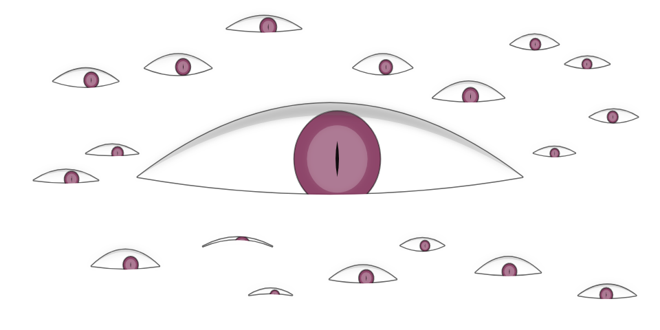

# < canvas >
+ The canvas element (< canvas >) provides scripts with a resolution-dependent bitmap canvas, which can be used for rendering graphs, game graphics, or other visual images on the fly, by using the associated canvas API.
+ First introduced in WebKit by Apple for the OS X Dashboard, < canvas > has since been implemented in browsers.
| Desktop browser | Version | | Mobile browser | Version | | ----------------- | :-----: | | ----------------- | :------------------: | | Safari | 3.0+ | | iOS | all | | Chrome | 10+ | | webOS | all | | Opera | 9+ | | Android | 2.0+ | | FireFox | 4.0+ | | BlackBerry | Playbook and OS 6.0+ | | Internet Explorer| 9.0+ | | Windows Phone 7 | none | [caniuse.com](https://caniuse.com/#search=canvas)
HTML ``` <canvas id="canvas" width="200" height="400"></canvas> ``` JS ``` const canvas = document.getElementById('canvas'); const ctx = canvas.getContext('2d'); ```
Usage
Drawing
Typographic effects
Animation
Online and offline games
Drawing
## Rectangles - simple shapes ``` c.fillStyle = "red"; c.fillRect(100,100,400,300); //x, y, width, height ``` <img data-src="images/redrect.png">
## Paths - complex shapes ``` c.fillStyle = 'red'; c.beginPath(); c.moveTo(10,30); c.bezierCurveTo(50,90,159,-30,200,30); c.lineTo(200,90); c.lineTo(10,90); c.closePath(); c.fill(); c.lineWidth = 4; c.strokeStyle = 'black'; c.stroke(); ```
Typographic effects
+ strokeText(string, x, y) — draws outline (stroke) text. + fillText(string, x, y) — draws filled text. ``` ctx.strokeStyle = 'white'; ctx.lineWidth = 1; ctx.font = '36px arial'; ctx.strokeText('Canvas text', 50, 50); ctx.fillStyle = 'red'; ctx.font = '48px georgia'; ctx.fillText('Canvas text', 50, 150); ```
See more:
Typographic effects in canvas
Animations
The steps to create canvas animation: + Clear the canvas contents. + Save state (if necessary). + Draw the graphics you are animating. + Restore the settings you saved in step 2. + Call requestAnimationFrame() to schedule drawing of the next frame of the animation.
See the Pen <a href='https://codepen.io/cpiscopo/pen/yfBGk/'>Matrix animation using html5 canvas</a> by Clayton (<a href='https://codepen.io/cpiscopo'>@cpiscopo</a>) on <a href='https://codepen.io'>CodePen</a>.
See the Pen <a href='https://codepen.io/dissimulate/pen/KrAwx/'>Tearable Cloth</a> by dissimulate (<a href='https://codepen.io/dissimulate'>@dissimulate</a>) on <a href='https://codepen.io'>CodePen</a>.
20+ Awesome HTML5 Canvas Examples with Source Code
JavaScript HTML5 Canvas Animated Background
Online and offline games
See the Pen <a href='https://codepen.io/yiotiskl/pen/wGXeKV/'>Canvas Bird</a> by Yiotis (<a href='https://codepen.io/yiotiskl'>@yiotiskl</a>) on <a href='https://codepen.io'>CodePen</a>.
Sinuous game
Magician - Fairy Rescue
Canvas, SVG, CSS, DOM animation - what to use?
+ SVG - for existing shapes + CSS or DOM animation - for large static areas + Canvas - charts, graphs, dynamic diagrams, video games
Thanks for watching!
 (
404 page built by Hakim El Hattab
)
Canvas tutorial(MDN)
HTML Canvas Deep Dive
Canvas tutorial (https://www.w3schools.com)
Slides:
Transcript: